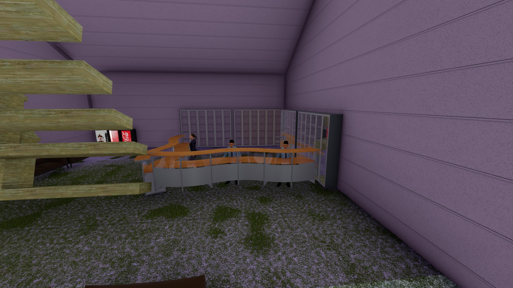
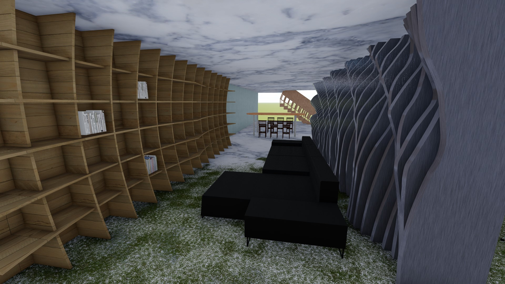

Inspiration and References

Corridor
Writer's Residential
Screening Room
Ticket Office
Toilet
Lobby
Bookrack
Variable personal area
Variable personal area
Dining area
Master room
Washroom and Laundry Room
ROOF
Passage/corridor

Passage/corridor